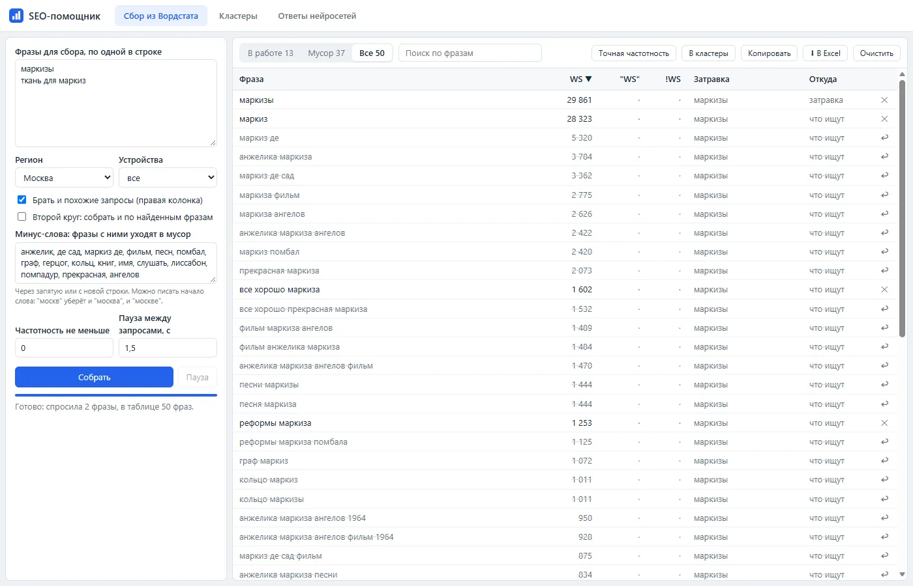
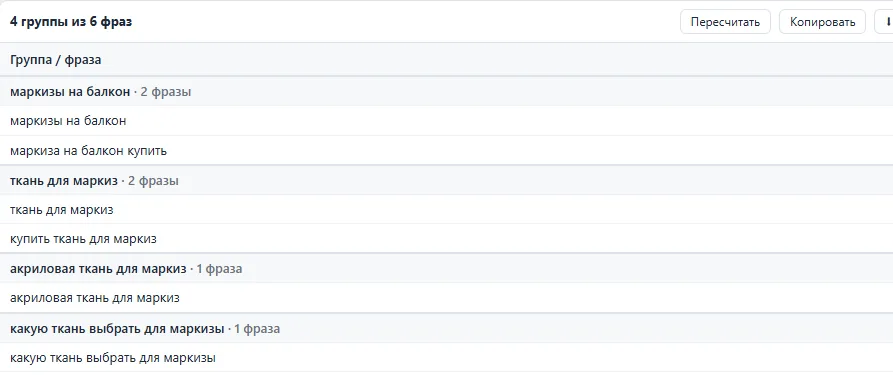

рабочий инструмент · вайб-кодинг
SEO-помощник (для Opera)
Зачем
Сбор семантики руками занимает часы: Вордстат, потом Арсенкин, который часто зависает. А проверить, называют ли компанию нейросети в своих ответах, раньше было вообще нечем. Расширение работает под входом пользователя в его браузере: без ключей, паролей и оплаты. Если сервис показывает капчу, работа встаёт на паузу, и проверку проходит человек.
Сбор из Вордстата
Левая и правая колонки по каждой фразе, второй круг по найденным фразам, точная частотность в кавычках и с восклицательными знаками. Минус-слова не удаляют фразы, а переносят в мусор: по слову "маркизы" Вордстат приносит фильм про Анжелику и маркиза де Сада, их видно и можно вернуть.

Кластеры по выдаче Яндекса
По каждой фразе помощник берёт топ-10 Яндекса без рекламы и сервисов Яндекса. Фразы с общими сайтами в топе попадают в одну группу: Hard для коммерческих запросов, Soft для информационных. Выдача запоминается, порог можно менять без новых запросов.

Ответы нейросетей
Помощник задаёт вопросы покупателей Алисе AI в поиске Яндекса, ChatGPT и DeepSeek и считает, где компанию называют, где ставят ссылку на сайт и кого называют вместо неё. Выводы "что хорошо" и "что не так" строятся по правилам из самих ответов. Каждая проверка сохраняется с датой, поэтому видно, как картина меняется от месяца к месяцу.

Как проверяла
- Цифры из Вордстата сверила с таблицей в самом Вордстате: совпали один в один
- По коммерческим запросам на первой странице Яндекса бывает всего 5-6 обычных сайтов, остальное реклама и товары. Помощник добирает топ-10 со второй страницы
- Нашла, что Яндекс встраивает в ответ Алисы AI рекламный блок. Помощник выносит его отдельно, чтобы реклама не считалась упоминанием
- ChatGPT сменил разметку страницы, и старое чтение ответа перестало работать. Теперь поддерживаются обе версии, а источники берутся даже из значков сайтов